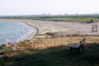
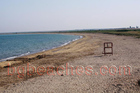
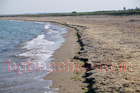
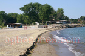
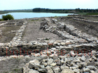

Дуранкулак
Дуранкулак е малко село разположено в най-североизточната част на България, почти до границата с Република Румъния, в пределите на община Шабла, област Добрич. Историческите източници посочват, че Дуранкулак е създаено околко 19 век. През първите две десетилетия на 20 век селището е част от земите на северната ни съседка. Едва през средата на 20 век отново става част от нашата красива черноморска ивица. Постоянните жителите на това красиво място са около 600 души които знаят, че думата "дуранкулак" има турски произход и означава "водно ухо". По-старите хора в селото помнят и другите му имена - Блатица и Карталии. Дуранкулашкото езеро е една от най-красивите природни забележителности, която всички туристи непременно трябва да посетят. Това е най-северното езеро по крайбрежието на Черно море и както може да се очаква водата му е леко солена. Мястото е особено атрактивно за любителите на риболова, освен това езерото е част от основния път на миграция на много прелетни птици. Във "блатото" или "карталиеца", както го наричат още, са разположени два острова - Големия и Малкия. Единственото в Европа светилище на богинята Кибела се намира на Големия остров. Ресторантите в Дуранкулар се славят и със своята традиционна рибена чорба, приготвена по специална рецепта от местните рибари. Къде се намира Дуранкулак? Благодарим на Георги Минев за корекциите и допълнителните снимки, които ни изпрати.
Жици
Образцов дом
Работа на полето
Море от злато
Дуранкулашкото езеро
На пътя
Пшеница
Панорамна гледка- 
Началото на плажа - 
Крайбрежна ивица - 
Плажа на Дуранкулак - 
Крайбрежната ивица на Дуранкулак
Сцена
Ограда
Млад рибар на Дуранкулак
Лада на плажа
Каруцари, внимание!
Каруца на плажа
Буря над Дуранкулак
Граничен плаж
Още една снимка от Румънския бряг- 
Дуранкулашки разкопки
Дуранкулашки разкопки 2
Още една снимка от плажа на Дуранкулак
Любов